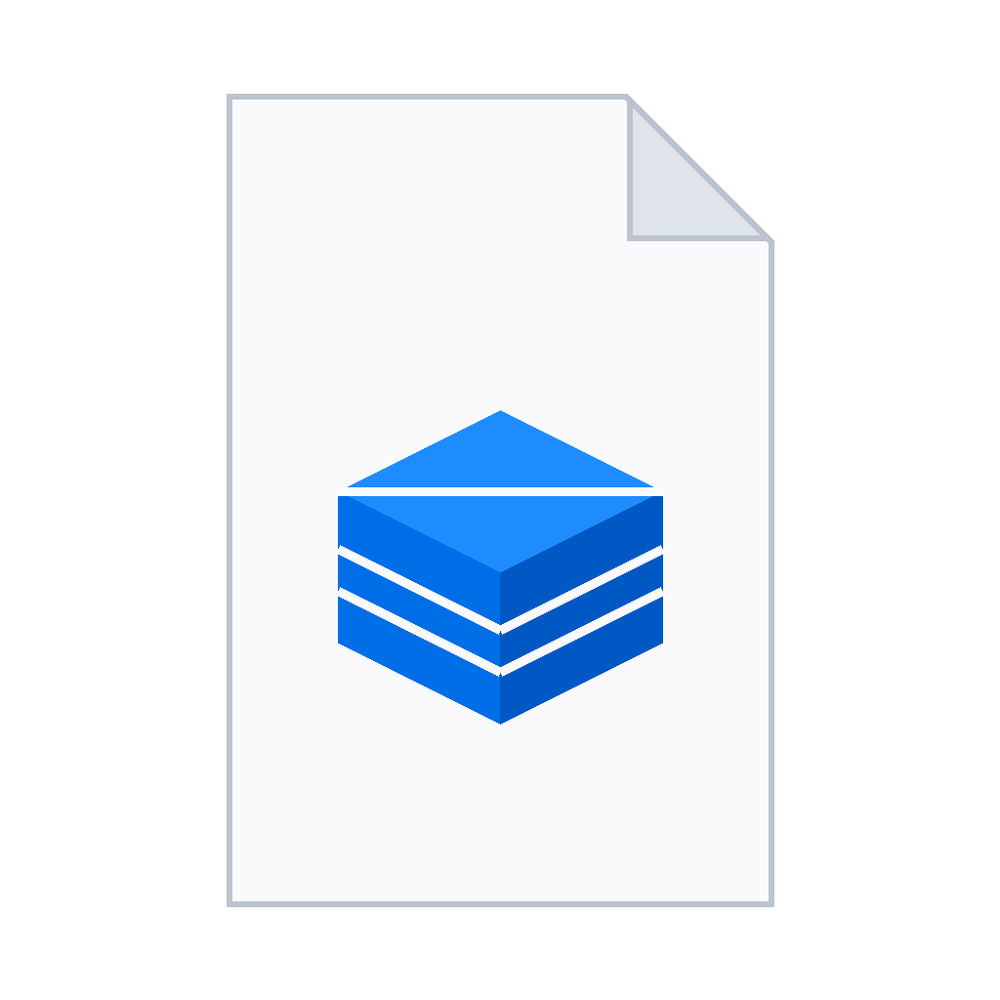

Make an app you can send
An AI writes it. Krate makes it real: one small file that opens on Mac, Windows, and Linux, and cannot touch anything you did not allow.
Prefer the terminal? The CLI installs in one line:
$
curl -fsSL https://krate.tech/install.sh | sh
irm https://krate.tech/install.ps1 | iex
In Command Prompt instead? Run powershell first, then paste the line above.
Free and open source · works with the AI you already have
- Understanding what you asked for
- Writing the code
- Building it
- Packing it into one file
- Checking it only touches what it declared
Type a sentence. Get an app.
No project setup, no templates, no code on your screen. You describe the app; the AI you already have writes real native code; Krate compiles, checks, and packs it into one file.
- Works with Claude, Codex, Gemini, Copilot, or Grok
- Attach a screenshot or a design -- "make it look like this"
- Your words are kept through every install and retry
Every app says what it wants. Before it runs.
An app made by an AI -- or sent by a stranger -- opens inside a sandbox. It reaches nothing by default: not your files, not your network, not your microphone. What it wants is shown in plain words, and you decide.
- Deny it and the app still opens, just without that power
- No account, no telemetry decisions -- the wall is local
"'The internet: blocked' answers the worry before it is asked." Denis A. Joly, early reviewer
Send it like a photo.
The whole app is one small file. Mail it, drop it in a chat, put it on a USB stick. It opens by double-click on Mac, Windows, and Linux -- no installer, no runtime, no "works on my machine".
"It is the moment you send someone a script." Denis A. Joly, early reviewer
- Typically 15-60 KB -- hundreds of apps fit in one photo's worth
- Same file runs on Intel and ARM, all three systems
Check any app yourself.
One command builds an app, verifies it imports only Krate's safe APIs, runs it headless, and clicks it like a person would. Another renders its window to a PNG without opening anything. Trust is checkable.
- Six-stage verdict with the failing stage named
- Pixel-level proof an app draws what it claims
A link anyone can run.
One command puts your app on Krate Cloud and hands you a URL. Anyone with Krate runs it straight from that link; anyone without gets a one-command install first.
- Sign in with GitHub, publish, send the link
- The gallery shows real screenshots of real apps
- Understanding what you asked for
- Writing the code
- Building it
- Packing it into one file
- Checking it only touches what it declared
Habit Tracker wants permission to:
- open a window
- save your data on this computer

But why Krate?
95 MB holding a 50,000-line document. The same app built on Electron needs 2.3 GB.
0.2 s to a working window. Electron takes 1.8 s on a good day — 17 s on its first.
Frame pacing within 0.3 ms of the display's clock, at 5,000 lines and at 50,000 alike.
0.8% with the document open; the Electron build burns 21% of a core doing nothing. Measured against MarkText 0.17.1 on Apple silicon, August 2026 — every number, the method, and the losses we fixed on the way: the full benchmark log.
Everything the file needs to be trusted
One runtime for the whole path: make, check, open, send, publish.
Try it in your terminal
One command to install. Your first app is one sentence away.
curl -fsSL https://krate.tech/install.sh | sh
irm https://krate.tech/install.ps1 | iex
RECOMMENDED
Krate Studio
Describe an app in a window instead of a terminal. Watch it being made, change it by asking, and send the file to anyone.
Or download it
Krate Studio for your computer, with the terminal tool inside. New releases ship often; the updater keeps you current.
All releases and checksums · signed and notarised by Apple, so downloads open without warnings.
Make something useful.
Send it to someone.
Install now and describe your first app to the AI you already have.
$curl -fsSL https://krate.tech/install.sh | sh
irm https://krate.tech/install.ps1 | iex